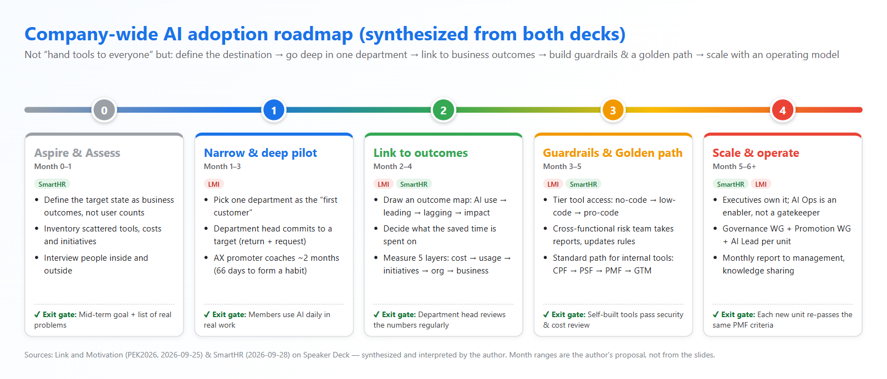
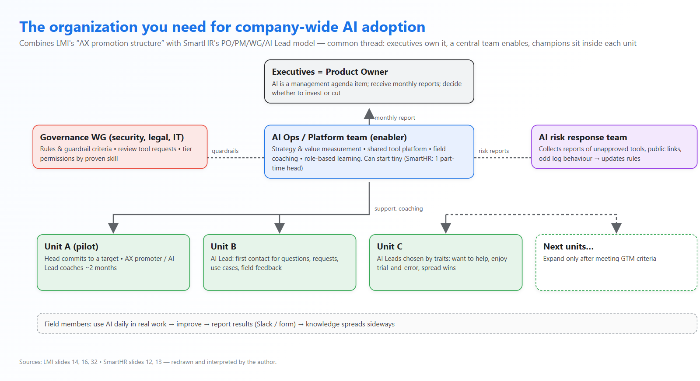
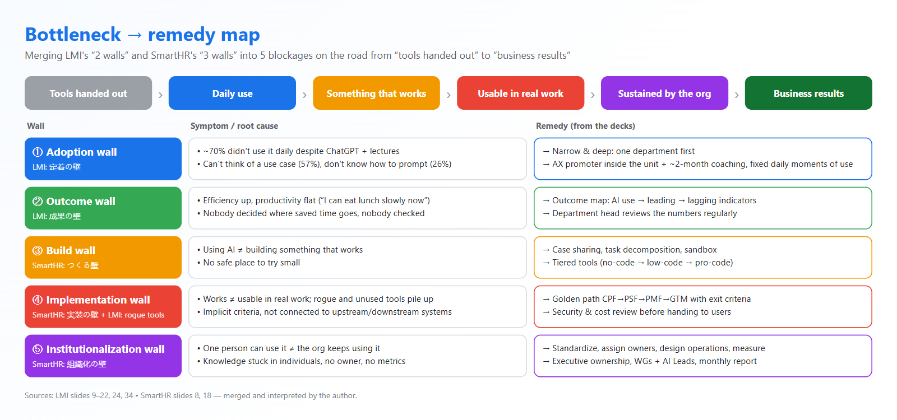

Company-wide AI Adoption: Roadmap, Organization and Breaking Bottlenecks
Lessons from two Japanese slide decks — Link and Motivation (1,500 non-engineers) and SmartHR (1,652 people, the first 6 months of its AI Operations Office) — compared with how Scuti AI works today, plus the strategies I want to try.
Written: 2026-10-03 • AI Quest – Type 1 (Investigate What) • Sources: LMI – PEK2026, SmartHR – 全社AI推進はどう始まったか
Contents
- 1. The two sources: who, how big, where they are
- 2. Core idea: adoption is organizational change, not a tool rollout
- 3. A 5-phase roadmap (synthesized)
- 4. The organization you need
- 5. Five common bottlenecks and how to break them
- 6. What I learned, in my own words
- 7. Comparison with Scuti AI (author's perspective)
- 8. Strategies to try at Scuti & how to use them
- 9. Research session video
- 10. Conclusion
1. The two sources: who, how big, where they are
Link and Motivation (LMI)
- Speaker: Tomonori Kawano – executive officer in charge of AX (AI Transformation)
- Size: ~1,500 non-engineers + ~100 engineers
- Published 2026-09-25, 45 slides, event “PEK2026” (per the URL; the talk closes with Platform Engineering lessons)
- Focus: getting non-engineers to produce results with AI and build tools safely
Reported results (Sep 2026; each figure measured in a different unit): ~1,500 people using AI daily, ~3,000 internally built AI tools, revenue per person ~140% YoY (consulting), meetings per person ~1.8×, operations workload ~50% lower (outsourcing business).
SmartHR
- Speaker: Yoshiki Konishi – head of the “AI Operations Office”
- Size: 1,652 people (Apr 2026), ~75% in non-development functions
- Published 2026-09-28, 20 slides
- Focus: the first 6 months of building the machinery for company-wide AI: roles, governance, measurement
Starting point: Gemini and Notion AI were already widely used, but there were no shared rules, each unit picked its own tools, and cost/usage data was scattered. The office launched in Apr 2026 with one part-time head who had no dedicated AI/DX experience.

2. Core idea: adoption is organizational change, not a tool rollout
If I could keep only one sentence from both decks: user count is not an outcome. SmartHR writes it into its mission — the end goal is not users or usage volume, but “a state where business results are created sustainably”. LMI learned it the hard way: ChatGPT for everyone plus lectures, and in Jan 2024 roughly 70% still did not use it even once a day.
SmartHR draws the goal as a three-step staircase: individual results → organizational results → business results, and designs the whole program around McKinsey's 5As.

As I read them, three mindset shifts run through both decks:
| From (common thinking) | To (what the two companies did) |
|---|---|
| Wide and shallow: give tools to everyone at once | Narrow and deep: one department as the “first customer”, prove value, then expand |
| Count users and prompts | Measure the chain: cost → usage → initiatives → organizational results → business results |
| The AI team as gatekeeper that allows or forbids | The AI team as enabler: platform, paved road and guardrails so others can move fast |
3. A 5-phase roadmap (synthesized)
Neither deck presents a timeline-style roadmap. I merged the steps of both companies into 5 phases, each with an exit gate — borrowing the “meet the completion criteria before moving on” spirit of LMI's golden path.

Phase 0 – Aspire & Assess
SmartHR spent most of its first month just seeing clearly: interviews, an inventory of tools, costs and initiatives, a look at existing structures. The problem at launch was not “too little AI” but everyone doing it differently — each new tool needed separate requests, nobody coordinated across units, data was scattered. You cannot prioritize well without that picture.
Phase 1 – Narrow & deep pilot
LMI's turning point: stop rolling out to the whole company and pick one department as the first customer, exactly like a platform team picks a pilot team. The two reasons people did not use AI (Jan 2024 survey) were can't think of where to use it (57%) and don't know how to instruct it (26%). Lectures fix neither; they need someone who knows the work sitting next to you and enough time to form a habit. Citing Lally et al. (2010) — a median of 66 days to form a habit — LMI coaches for ~2 months with weekly reviews. In short: the first reason is solved with “structure” (promoters, a review rhythm), the second with “coached practice”.
Phase 2 – Link to outcomes
Once people used AI regularly, LMI hit the second wall: efficiency rose but productivity stayed flat. The field quote says it all: “thanks to the time saved, I can now eat lunch slowly”. Nobody had decided where saved time should go, and nobody checked. The fix is an outcome map — work backwards from the desired result to AI behaviours (for sales: AI does research and decks → fewer internal meetings → more customer-facing time → more appointments per person per day), then review those numbers with the department head regularly. SmartHR does the same at company level with a 5-layer measurement model.


Phase 3 – Guardrails & golden path
As AI spreads, risk grows: unapproved tools, people approving dangerous operations because the AI asked, rogue tools everywhere. LMI did not ban; it built a guardrail (tool access by proven level) and a golden path (a standard process for building internal tools). Details in section 5.
Phase 4 – Scale & operate
Expanding to another department is not “send them the link”. LMI cites the CHAOS Report: ~80% of delivered software features go unused. So in each new department they again appoint a promoter, run an “install and use it together the first time” session, and interview non-users one by one. SmartHR packages scaling into an operating model: monthly reports to management, initiatives compiled into results reports shared company-wide.
4. The organization you need

The names differ, but the skeleton is nearly identical. I summarize it as 4 layers:
- Executives own it, not just sponsor it. SmartHR puts management in the PO role and AI on the management meeting agenda. LMI does the same at department level: the department head must commit to a target before starting.
- A small central team acting as enabler. SmartHR splits AI Ops into 3 areas / 6 functions: strategy & value measurement, field coaching & learning, tool platform & governance. At LMI the development organization plays this role (platform + coaching).
- Governance is a cross-functional group, not one person. SmartHR has a Governance WG (security, legal) next to a Promotion WG (AI Ops, IT). LMI has an AI security team made of development, IT and legal that collects reports and keeps rules up to date.
- Champions sit inside each department. “AX promoters” at LMI, “AI Leads” (in trial) at SmartHR: first contact for questions, requests and use cases, and the channel that carries field feedback back up.

5. Five common bottlenecks and how to break them
LMI talks about “2 walls” (adoption, outcome), SmartHR about “3 walls” in non-development teams (build, implementation, institutionalization). Placed on one road from “tools handed out” to “business results”, they turn out to be 5 consecutive stages, not overlapping ones:



Tiered guardrails (LMI)
Instead of the same tool for all, LMI uses 3 levels: Level 1 no-code (Claude Cowork, Gemini – for everyone; runs in an isolated cloud environment, so a mistaken approval cannot reach the PC or internal network), Level 2 low-code (self-hosted Dify / n8n, for people improving shared workflows), and Level 3 pro-code (Claude Code, only for people who already built a tool that produced results and answered every question of a security test correctly). Slide 27 (Image 8) puts non-engineers at roughly 70% / 20% / 10% across the levels, while the “AI skill map” table on slide 30 lists a “current ratio” of 85% / 10% / 5% – the same deck gives two different splits, so treat them as rough figures. All engineers get Claude Code.

Golden path “Fit Journey” (LMI)
Non-engineers can now build tools, but nobody taught them how to run a product. LMI applies new-product development to internal tools: 4 phases with hard exit criteria.
| Phase | Meaning | Exit criteria |
|---|---|---|
| CPF | Problem identification | A problem users strongly relate to; To-Be flow + expected outcome agreed with the department head |
| PSF/SPF | Value validation | 2–3 trial users feel the value and the expected time saving is reached; passed security & cost review before hand-over |
| PMF | Adoption | Sean Ellis test “very disappointed” ≥ 40%; WAU ≥ 70% of registered users; outcome achieved |
| GTM | Roll-out to other departments | Each new department re-meets the same 3 PMF criteria |
LMI's slide 42 sums it up: whoever built the tool, it must pass all four gates, with no skipped steps.
6. What I learned, in my own words
- Treat AI adoption like an internal product. First customer, PMF, metrics, golden path. That is why LMI ends with Platform Engineering: Team Topologies, guardrails, product management, DORA/SPACE — all familiar to engineers.
- The bottleneck moves over time. First “nobody uses it”, then “used but no results”, then “tools built but unmanaged”, finally “one person can, the organization can't sustain it”. The plan must shift focus by stage; there is no single fix.
- Saved time is an asset to allocate, not a natural reward. If you don't decide where it goes, it evaporates.
- Guardrails exist to let you go faster, not to block. Access by proven capability is both safer and motivating (“level up”).
- Starting small is fine. SmartHR began with one part-time person without dedicated AI/DX experience. What matters is a mandate from leadership and the right order: see first, build the machinery second.
- Measure the chain to find the clog. SmartHR's 5 layers show where value gets stuck (paying but nobody uses it? heavy use but no initiatives? initiatives but the org is not faster?).
7. Comparison with Scuti AI (author's perspective)
- Scuti is a Vietnamese software/AI company serving mainly Japanese clients, organized by project (PM, BrSE, comtor, dev, QA).
- Engineers already use AI on their own (Claude Code, Cursor, Copilot, Gemini in Google Workspace…), with large variation per person and per project.
- The company runs an AI Quest program for research and sharing (this post is one quest).
- Contracts/NDAs with Japanese clients decide which AI may touch client code and data; this is handled project by project.
- Non-development teams (HR, accounting, sales, admin) use AI less than engineering; AI results are tracked mostly as activity (quests, sharing sessions) rather than business metrics.
| Aspect | LMI | SmartHR | Scuti today (assumed) | Gap / what to try |
|---|---|---|---|---|
| Destination | Department productivity (revenue/person, meetings) | “Sustainable business results”, not user counts | Encourage learning and use; goal is mostly individual capability | State goals as project metrics: lead time, UAT defect leakage, margin per man-month |
| How to start | Narrow & deep: one department as first customer | One month of Aspire/Assess first | Wide: everyone does quests | Keep AI Quest as the base, add one deep pilot |
| Champions | AX promoters inside units, chosen by traits | AI Lead per unit (in trial) | Volunteers, no formal role | AI Champion per project with allocated time |
| Leadership | Department head commits (return + request) | Executives as PO, monthly reports | Supportive, no regular reporting mechanism yet | One-page monthly AI report to management |
| Measurement | Outcome map, reviewed with the head | 5 layers: cost → usage → initiatives → org → business | Activity metrics (quests, sessions) | A minimal 5-layer dashboard |
| Guardrails | 3 tool levels by capability + security test | Governance WG reviews requests, risk tiers | Rules per project/client | A “tool level × client data sensitivity” matrix |
| Internal tools | Golden path CPF→PMF→GTM, ~3,000 tools | Monthly initiative reports via Slack | Personal scripts/tools scattered, rarely reused | A lightweight Fit Journey for AI Quest outputs |
| Risk | Cross-functional AI security team | Governance WG (security, legal) | Handled ad hoc | AI risk channel + checklist before using AI on client data |
8. Strategies to try at Scuti & how to use them
Six strategies that can start now, ordered along the roadmap in section 3:
S1. One page: destination + current state (Phase 0, 2 weeks)
- Inventory: which AI tools we pay for, who uses them, which project may use what under its contract.
- Write the goal as 2–3 project metrics instead of user counts, e.g. “cut the time from receiving a Japanese spec to closing Q&A by 30%”.
- How to use: run an LMI-style short survey (“why don't you use AI every day?”) to find the real bottleneck before choosing solutions.
S2. A 66-day pilot in one group (Phase 1)
- “First customer” candidates: the BrSE/comtor group (spec translation, Q&A, minutes) or the QA group (test case generation, reviews).
- Pitch the leader with return + request: “save X hours/week for the team” + “one champion at 10% time, leader joins weekly review, ‘use AI daily’ in personal goals”.
- How to use: pick the champion by LMI's three traits, fix 2–3 “AI moments” in each day, hold a 15-minute weekly review.
S3. An outcome map for outsourcing projects (Phase 2)
- Example: AI translates and summarizes specs → (leading) fewer Q&A items sent to the client, less spec reading time → (lagging) shorter ticket lead time, fewer defects from misread specs → (impact) project margin, client satisfaction.
- How to use: pull numbers automatically from Backlog/Jira and calendars (as LMI pulls from Calendar), review with the PM every 2 weeks; if leading indicators don't move, change how AI is used rather than blaming users.
S4. A “tool level × client data” guardrail matrix (Phase 3)
- Level 1 (everyone): Gemini / chat AI inside the company Workspace — internal or anonymized data only.
- Level 2 (process improvers): low-code such as Workspace Studio / n8n / Dify in a company-managed environment with logs.
- Level 3 (coding agents on client repos): only when the contract allows it and the user passed a security test (LMI-style: every answer correct).
- How to use: each project gets one row in the matrix, approved by the PM + security at kick-off. Add a blameless “AI risk” chat channel.
S5. A lightweight golden path for AI Quest outputs (Phase 3–4)
- Quests that produce a tool/skill/prompt pass 4 gates: a real person needs it (CPF) → 2–3 trial users see value + security/cost review (PSF) → WAU and a Sean Ellis test in the team (PMF) → roll-out to other projects (GTM).
- How to use: turn AI Quest from “submit an assignment” into a pipeline that produces shared assets; only quests that reach PMF enter the shared library.
S6. A small operating model + monthly report (Phase 4)
- One executive sponsor; 2–3 part-time people as “AI Ops” (enabler); a Governance WG (security/ISMS, legal, IT); an AI Champion per project.
- A one-page monthly report on SmartHR's 5 layers: tool cost → usage rate → initiatives/quests with results → project metrics → business impact.
- How to use: monthly initiatives submitted through one form/Slack channel (as SmartHR does), compiled by AI Ops into a company-wide report.
9. Research session video
The video walks through the reading and synthesis: opening both decks on Speaker Deck, flipping slide by slide and pausing on key slides, reviewing the custom diagrams, and finally scrolling through the finished blog.
10. Conclusion
The two decks say the same thing from two directions. LMI shows that in the field, habits, results and safety must be designed — they don't arrive by themselves. SmartHR shows that at company level you need machinery: executive ownership, a small enabling team, cross-functional governance, champions in every unit and chain-based metrics. Scuti's biggest advantage is that we are an engineering company: golden paths, guardrails, metrics and PMF are our native language. What remains is to bring them to the teams next door — and, as LMI's last slide says, “first, go and listen to one department.”
Three things I will do next week:
- Send a 3-question “why not use AI daily?” survey to one BrSE/QA group.
- Sketch an outcome map for one running project and ask the PM which numbers can be collected automatically.
- Propose the guardrail matrix (S4) to the security team for feedback.
References
- Link and Motivation – 全社員がAIを「使う」の次へ（ノンエンジニア1,500人が安全に業務を作り変えるゴールデンパスとガードレール） – Speaker Deck, 2026-09-25
- SmartHR – SmartHRの全社AI推進は、どう始まったか – Speaker Deck, 2026-09-28
- Works cited inside the slides (not read directly): McKinsey “A better way to lead large-scale change” (5As); Lally et al. (2010) on habit formation; Standish Group CHAOS Report; the article “AI利用率99.8%。SmartHRの「現在地」と「次の壁」”.